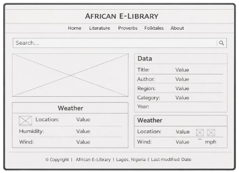
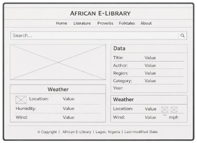

Wireframes
Mobile View Wireframe

Desktop View Wireframe
Site Name: African E-Library
The name “African E-Library” represents a digital platform dedicated to preserving, organizing, and sharing African knowledge, literature, wisdom, and cultural heritage.
Optional domain: african-elibrary.org
Author: Godswill Moses Ikpotokin
Website Description: African E-Library is an educational and cultural website designed to provide centralized access to African literature, proverbs, folktales, and historical knowledge. The platform supports learning, research, and cultural preservation through modern web technologies.
The purpose of the African E-Library website is to offer a centralized digital repository of African knowledge that is accessible to students, researchers, and young Africans. The site promotes cultural preservation while providing interactive and searchable content.
The color scheme reflects African heritage, nature, and value.
Mobile View Wireframe
Desktop View Wireframe
